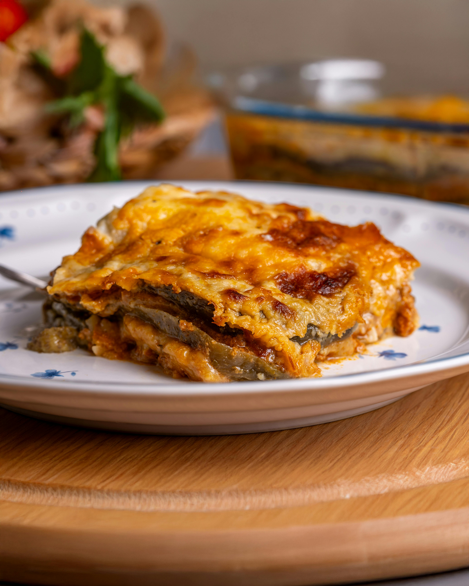

Moussaka

Description
Moussaka is a layered, baked Mediterranean and Balkan casserole dish most
famously associated with Bulgaria, featuring layers of eggplant or
potatoes, a rich spiced meat sauce, and a thick, creamy béchamel sauce on
top. It's a hearty comfort food, often made with ground lamb or beef, and
has regional variations across the Middle East and Balkans.
Ingredients
- 500 g minced meat
- 3 potatoes
- 1 head onion
- 150 ml sunflower oil
- 1 spring parsley
- 50 g tomato puree
- 1 tsp paprika
- 1 tsp black pepper
- 2 eggs
- 50 g flour
- 300 g yoghurt
Steps
- Grate carrots, chop onions and parsley.
- Peel the potatoes and cut them into small cubes.
-
In a greased deep frying pan, place the onions and fry the carrots until
soft.
-
Add the minced meat. Fry until crumbly, stirring occasionally with a
wooden spoon.
- Add the tomato purée, mix well and then add the potatoes.
- Season with savory, black pepper, paprika, parsley and stir.
-
Leave to fry for a few more minutes, then transfer to a baking tray and
add enough water to cover part of the dish.
-
Bake the moussaka for about 20-30 minutes in a preheated 180 degree oven
until slightly browned.
- Carefully remove from the oven and pour with the topping.
- Return to the oven and bake until golden.
For the topping
- In a bowl, mix the flour, yogurt and eggs
-
Season with a pinch of salt and add a few leaves of chopped parsley.
- Mix well.
Home